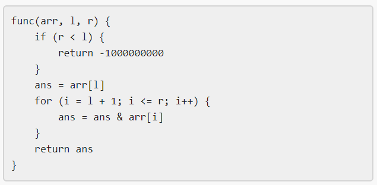

| Category | Difficulty | Likes | Dislikes |
|---|---|---|---|
| Algorithms | Hard | 402 | 20 |
american-express

Winston was given the above mysterious function func. He has an integer array arr and an integer target and he wants to find the values l and r that make the value |func(arr, l, r) - target| minimum possible.
Return the minimum possible value of |func(arr, l, r) - target|.
Notice that func should be called with the values l and r where 0 <= l, r < arr.length.
Example 1:
Input: arr = [9,12,3,7,15], target = 5
Output: 2
Explanation: Calling func with all the pairs of [l,r] = [[0,0],[1,1],[2,2],[3,3],[4,4],[0,1],[1,2],[2,3],[3,4],[0,2],[1,3],[2,4],[0,3],[1,4],[0,4]], Winston got the following results [9,12,3,7,15,8,0,3,7,0,0,3,0,0,0]. The value closest to 5 is 7 and 3, thus the minimum difference is 2.Example 2:
Input: arr = [1000000,1000000,1000000], target = 1
Output: 999999
Explanation: Winston called the func with all possible values of [l,r] and he always got 1000000, thus the min difference is 999999.Example 3:
Input: arr = [1,2,4,8,16], target = 0
Output: 0
Constraints:
1 <= arr.length <= 1051 <= arr[i] <= 1060 <= target <= 107